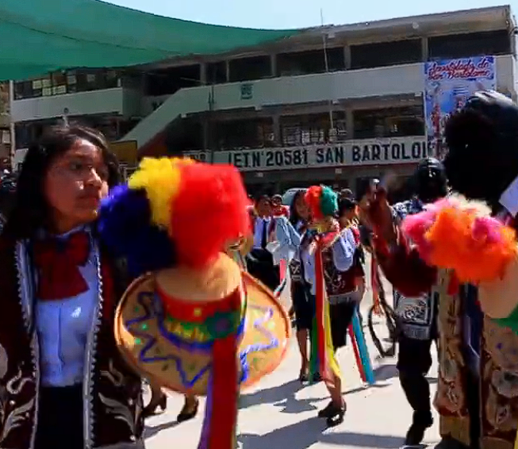
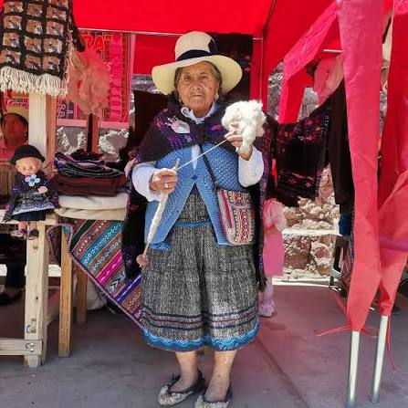
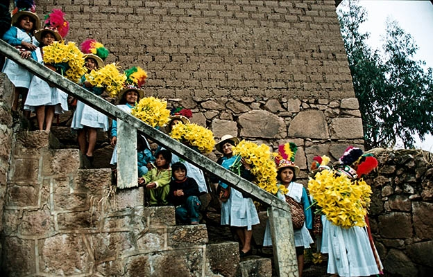
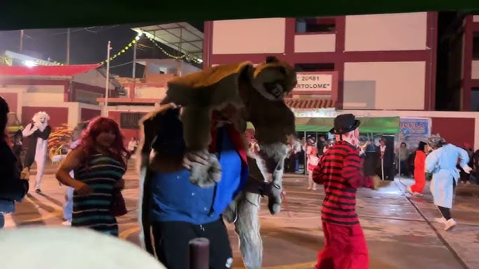
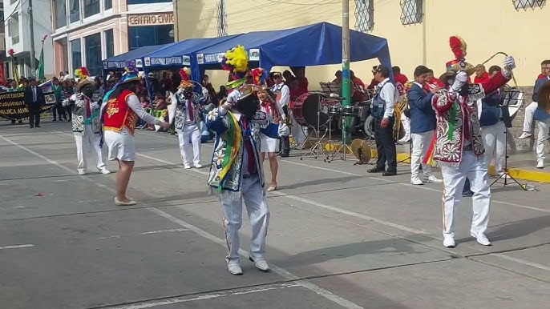
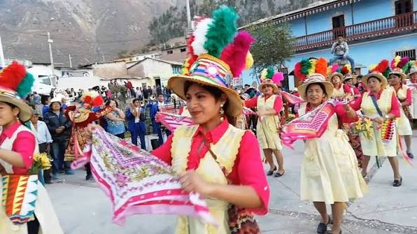
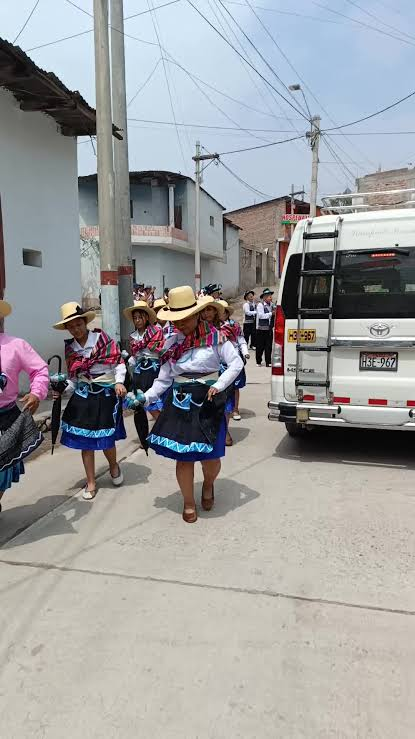
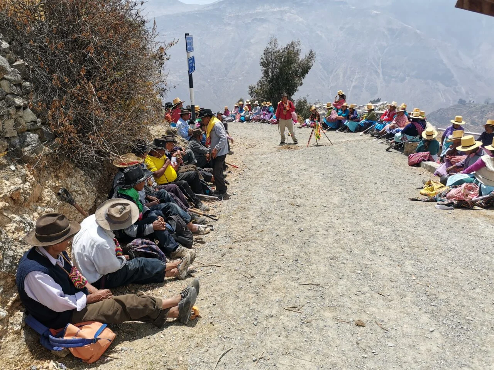

COSTUMBRE
Celebraciones comunitarias
Las celebraciones reúnen a familias, vecinos y visitantes alrededor de expresiones religiosas, culturales y sociales.
Conoce las costumbres, expresiones, sabores, conocimientos y tradiciones que forman parte de la identidad cultural de San Bartolomé.
La cultura de San Bartolomé se encuentra en sus festividades, costumbres, creencias, espacios históricos y en las actividades que unen a su comunidad. Conocer estas expresiones nos permite entender cómo se ha construido la identidad del distrito y por qué forman parte de su patrimonio..
🎭 Tradiciones que nos representan
Cofradía de Negritos, Curcuchas y otras expresiones culturales.
🏛️ Historia que permanece
Iglesia, Chucuncuya, Chaute y otros espacios relacionados con la memoria del distrito.
💧 Saberes que se transmiten
Champería, siembra y cosecha de agua y conocimientos vinculados al territorio y la agricultura.
🤝 Una identidad que compartimos
Cómo las costumbres, la historia, el territorio y la participación de sus habitantes forman la identidad sanbartolomina.
La identidad cultural no pertenece a una sola expresión. Está formada por diferentes elementos que se relacionan entre sí.
Costumbres y prácticas transmitidas entre generaciones.
Explorar 02Manifestaciones artísticas presentes en la vida comunitaria.
Explorar 03Sabores, productos y conocimientos culinarios locales.
Explorar 04Elementos visuales relacionados con celebraciones e identidad.
Explorar 05Espacios, objetos y expresiones que representan la historia local.
Explorar 06Relatos, recuerdos y conocimientos compartidos por la comunidad.
ExplorarLas tradiciones son prácticas que adquieren significado dentro de una comunidad y que pueden transformarse con el paso del tiempo.
Las celebraciones reúnen a familias, vecinos y visitantes alrededor de expresiones religiosas, culturales y sociales.
Muchas expresiones culturales adquieren sentido cuando son compartidas por diferentes generaciones.
La actividad agrícola y el territorio también forman parte de los conocimientos y prácticas transmitidos localmente.

La música y la danza permiten representar sentimientos, creencias, historias y formas de convivencia. En las festividades locales pueden convertirse en espacios donde la comunidad reafirma sus vínculos.
El patrimonio puede ser material, inmaterial o natural. Su valor no depende solamente de su antigüedad, sino también del significado que posee para una comunidad.
Espacios, construcciones, objetos y elementos físicos vinculados con la historia y cultura local.
Tradiciones, conocimientos, expresiones artísticas, relatos y prácticas sociales transmitidas por la comunidad.
DANZA · MÚSICA · RELATOS · COSTUMBRESPaisajes, espacios naturales y elementos del territorio que forman parte de la relación entre comunidad y entorno.
TERRITORIO · PAISAJE · NATURALEZALa vestimenta forma parte de las expresiones culturales que acompañan las fiestas, danzas y costumbres de los pueblos de San Bartolomé y sus anexos.

CHAUTEEn Chaute, la vestimenta está relacionada con las celebraciones y expresiones culturales de la comunidad. Durante sus festividades pueden encontrarse prendas y elementos utilizados por los participantes de las danzas tradicionales.

ARAMPAMPALa vestimenta utilizada en las actividades culturales de Arampampa forma parte de la identidad de sus habitantes y se relaciona con las costumbres y celebraciones de la zona.
En Huarochirí, la ropa utilizada en las danzas y festividades puede incluir sombreros, mantas, fajas, polleras, camisas, pañuelos y diferentes accesorios. Los colores, máscaras y elementos utilizados también ayudan a representar personajes y tradiciones.
En las Curcuchas, por ejemplo, existen diferentes personajes con vestimentas muy variadas. MINCETUR registra personajes como toreros, novios, chunchos, pastoras, negros, marineros y otros, mostrando la diversidad de la expresión cultural huarochirana.

Las Curcuchas son una expresión tradicional de Huarochirí que forma parte de sus costumbres, festividades y memoria cultural.
Escuchar música
Los Negritos son una expresión cultural de San Bartolomé que reúne música, danza y participación de la comunidad.
Escuchar músicaLos recuerdos de los habitantes, las historias familiares y los relatos sobre el territorio pueden convertirse en fuentes importantes para comprender cómo una comunidad interpreta su propio pasado.
Conocer la memoriaLa memoria de una comunidad también forma parte de su patrimonio.TURIS-IA · MEMORIA LOCAL
La revalorización cultural no consiste únicamente en guardar objetos antiguos. También implica conocer, documentar, compartir y participar en las expresiones culturales de la comunidad.
En San Bartolomé, muchas tradiciones siguen formando parte de la vida de la comunidad. Se transmiten entre generaciones y ayudan a conservar la memoria y la identidad del distrito.

La Cofradía de Negritos es una expresión cultural que forma parte de la identidad de San Bartolomé. Su tradición reúne danza, música y participación de la comunidad, manteniendo viva parte de la memoria cultural del distrito.
Estas manifestaciones culturales se transmiten entre generaciones y permiten que los habitantes mantengan presente una parte importante de sus costumbres y tradiciones.

Las Curcuchas forman parte de las expresiones culturales de San Bartolomé. Esta tradición representa una parte de la memoria y las costumbres que se mantienen presentes dentro de la comunidad.
Su valor cultural está en la participación de los habitantes y en la manera en que estas costumbres se siguen transmitiendo entre generaciones.

La champería es una práctica comunitaria relacionada con el cuidado y mantenimiento de los canales de agua. En San Bartolomé representa el trabajo conjunto de los habitantes y la relación que existe entre la comunidad y su territorio.
Más que una actividad, es un conocimiento que forma parte de la memoria local y que permite valorar la importancia del agua para la vida y las actividades de la comunidad.

La siembra y cosecha de agua reúne conocimientos y prácticas que buscan aprovechar y conservar el agua durante diferentes épocas del año. Es parte de los saberes que relacionan a la comunidad con su territorio.
Estas prácticas muestran la importancia del agua para la agricultura y para la vida de la población, además de representar conocimientos que pueden mantenerse y transmitirse entre generaciones.
Turis-IA puede ayudarte a explorar conceptos, tradiciones, lugares y expresiones culturales de San Bartolomé de una manera interactiva.
Explorar con Turis-IA